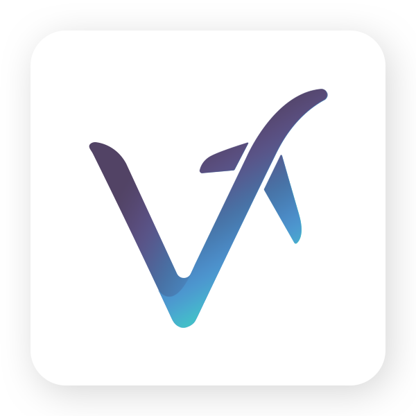
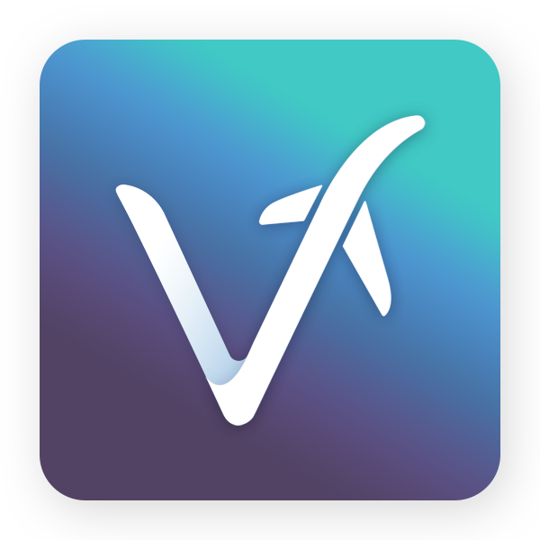
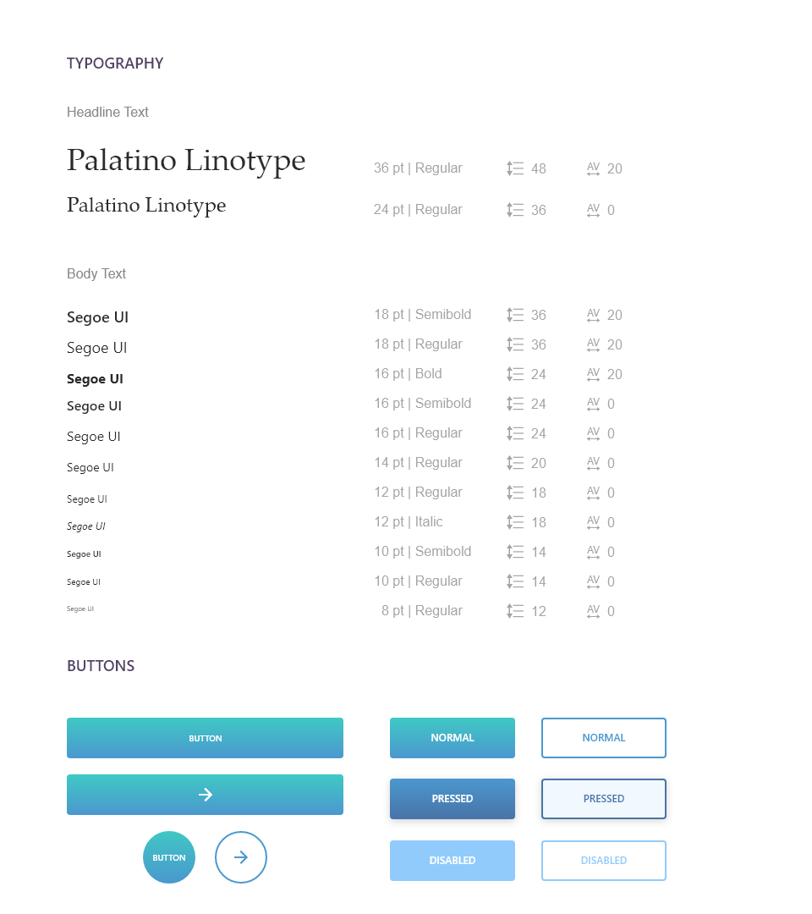
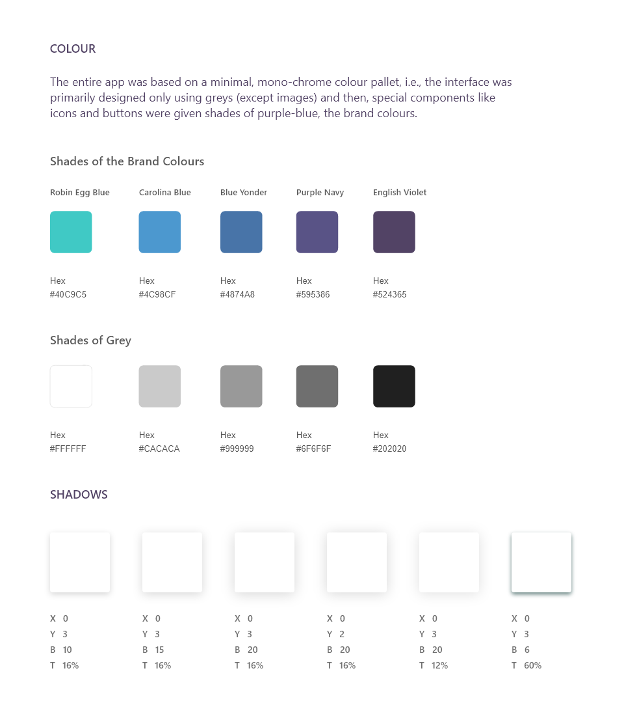
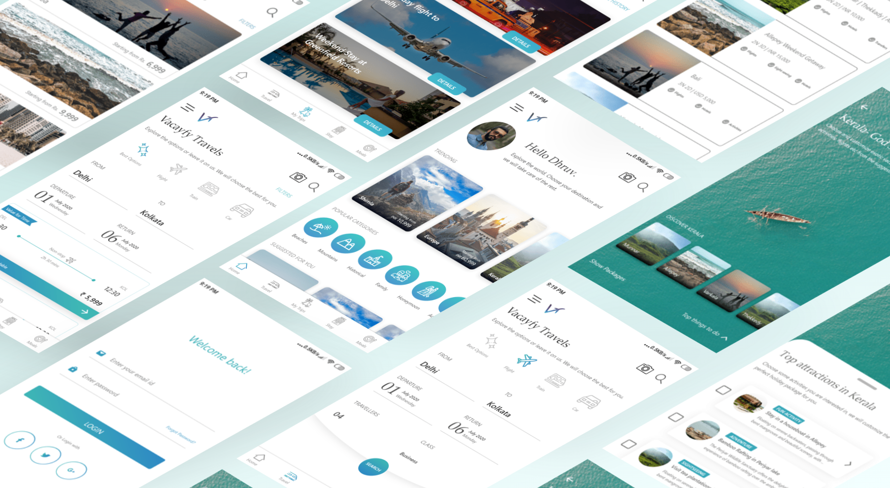

Vacayfy- Your next vacation sorted
OVERVIEW
Today there are many apps and websites out there which promise to help you with your trips; right from booking tickets to booking hotel rooms, suggesting fun activities at your destination spot, suggesting cuisines and what not. But sadly all of these features aren't available together on any major app today. Also, there are hardly any app to suggest you holiday destinations in case of a dillemma. What if a single app could do everything you need before, during and after your trip! Vacayfy serves this purpose, and has many other exciting features as well.
A little about my experience... I love travelling a lot!! And on every trip, I come back and ponder about how well it could have been, if I had planned it wisely beforehand. I end up wasting a lot of time actually. Yes, I do use apps. I stick to the MakeMyTrip app for booking tickets and Oyo for booking rooms and for planning, Google is to the rescue! Huh! Too much work. Always wished if there was some way, all this could be done in one place easily!”
. . .
The Process
After recollecting my own experiences with travel apps time and again, I got started with this project immediately. I approached the project using the Double Diamond model of Design Thinking, which has four different phases:Discover, Define, Develop, Deliver.
Phase 1: DISCOVER
Keeping my own experiences in mind, I had multiple assumptions about a normal user in the beginning. In order to validate those, an extensive User Research stage was essential. Through this, I was able to unfathom about the different categories of travellers, their dependancy on apps, their expectations regarding travel apps and their pain points pertaining to the apps available presently. I gathered qualitative and quantitative data using the following methods:
Online Surveys-
In order to gather preliminary data, it was important to gather as much data as possible. This couldn't be possible by meeting people individually. Therefore, I carried out an online survey using Google Forms and forwarded it via mail and WhatsApp to a varied group of (50) users belonging to different walks of life. This helped me gather insights into the following:
User Interviews-
To get a detailed insight into the user's experiences and to understand their goals better, additionally I interviewed 10 different users. They were chosen from different walks of life. In addition to the questions asked in the surveys, they were also asked the following descriptive or open-ended questions:

Phase 2: DEFINE
From the User Research phase, and the insights obtained from interviews and surveys, I was able to define the target audience. There were four major groups of people, who would use Vacayfy. They are demonstrated with the help of following User Persona types:
Throughout rest of the Design process, I ensured to keep in mind the goals, expectations and frustrations of the above four User Personas, Daniella, Dhruv, Shashank and Rishita.
. . .
The Customer Journey
A crucial step in this phase was mapping the journey of my users through the entire process of travelling- before, during and after a trip.
This provided me more insights into the emotions and perceptions of the users, and their points of breakdown. This, thus, helped me to improve the overall travel experience of the users.
Download a PDF version of the Customer Journey Map here .
. . .
Storyboarding
This was the most exciting part of the UX stage of the design process. Understanding the story of an average user is crucial to designing. Read the story of Daniella, on her weekend beach getaway!
Defining User Goals
At the end of Phase 2, I was able to define the goals of an average user, and also the goals of specific users, like Daniella, Dhruv, Shashank and Rishita.
- The user hates spending too much time planning and searching before travel.
- The user may not always go on a vacation/ holiday trip- Accomodating urgent requirements of business travellers
- The user on a vacation wants to make most of the trip and enjoy unique experiences, suited to their preferences.
. . .
Phase 3: DEVELOP
This phase included lo-fi prototyping and analysing the task-flow. Before this, I also made a little background research of task-flow in other travel apps, to drive ideation. Then I started right away sketching different app screens. It wasn't a single step. Multiple iterations and realisations led me to arrive at almost-final sketches. Also, I realised how I can reduce the number of screens and how I can make the app more interesting.
Sketching UI
Level of details at this stage- Write-up was suggestive, icons were mostly given tags and I avoided drawing them at this stage and to represent images, containers were made. Importance was given to the broad-content to be present on screens.
. . .
Wireframing
More details were added at this stage. The writing was almost finalised keeping the potential user in mind, and making the headlines conversational (using 'my', 'you'). The layout was given maximum detail. Icons used were representative and not final at this point. I tried to make the task flow easy and obvious at this point. Images were represented by containers. Colours and Font-styling was avoided to focus more on the User Experience. During this stage, I obtained feedback from pilot users and iterated the wireframes.
These are some wireframe screens of the app after two rounds of user feedback and iterations.
This is the broad breakdown of tasks in the app, as finalised at the end of this phase.
- Before the trip
- Deciding on the best package- allowing a way to customize package, providing relevant filters to search and shortlist packages
- Let the user decide among the best travel options, suited to their timings
- Accomodation- Incorporating filters to help users find the perfect stay
- During the trip
- Reaching destination- Best travel option to reach hotel, etc.
- Suggesting attractions and activities- also showing distance, price, route, etc.
- Suggesting restaurants nearby- incorporating filters to help users find the perfect place based on budget/ cuisine
- Best options for traveling in and out of the city
- Helping users in case of emergency- Hospitals, Medicine, Grocery, etc.
- After the trip
- Reflecting on the memories, sharing on social media- like, Image gallery by AI.
- Travelling back- Reminder alarms for flight timings, suggesting best options to travel, etc.
At the end of this process, I was certain of the features to be incorporated in the app. Also, in order to validate the ease of task flow, it was necessary to obtain feedback from some users.
Phase 4: DELIVER
This was the final stage of the entire project. At this point, I had a clear idea of my users, their goals, their painpoints, etc. I had made low-fidelity prototypes and made iterations on the basis of feedback from users.
User Flow Diagram
After the wireframing stage, this was the final Navigation Architecture or the User Flow of the app.
Branding
Even before User Research, I had already come up with the name Vacayfy for my app through an extensive brainstorming process. Now, in this phase, I worked on the logo of the app. For the logo, I decided to keep it simple and neat, possibly a monogram logo which could give the idea of travelling. Also, at this stage, I chose the colour palette for the app. Keeping in mind the google app icon guidelines, I designed the below two versions of the logo for Vacayfy app.


Visual Design
Minimalism and Modernism- These were the two broad concepts upon which the look and feel of the entire app was supposed to be based on. The entire app was based on a minimal, mono-chrome colour pallet, i.e., the interface was primarily designed only using greys (except mages) and then, special components like icons and buttons were given shades of purple-blue, the brand colours.


The final Design

Conclusion
The entire project as you see now, took me 4 weeks to reach here. I would say, it is not complete yet. Design is always an iterative process. With new trends and developments in the hi-tech world, design keeps progressing with time. In order to validate what I had achieved, I obtained feedback from a group of users, who loved the easy & directive UI of the app. They said they enjoyed a better experience with the app, as compared to the apps they had used. This was my preliminary objective- To offer better solutions to the existing problems, which I believe I was successful in achieving.
Still I believe I have a lot to work on, like Iconography. This is something which I haven't paid much attention and used conventional ones, in order to proceed with the app. However, they can be made much more interesting, which is something I am working on right now.
Stay tuned. I will soon be uploading the link to my entire prototype.
Hope you liked my work. Thanks for reading!